Linux内核设计与实现
操作系统和内核简介
处理器上任何指定时间点上的活动必然概况为下列三者之一（当CPU空闲时，相当于运行一个空间程，运行于内核空间）：
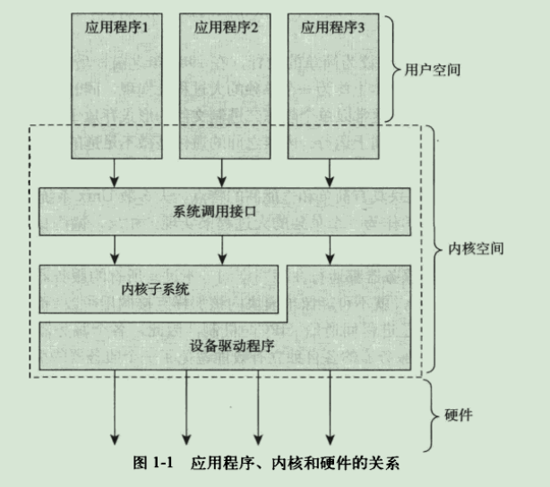
内核开发特点
- 无libc库也无标准头文件
- 没有内存保护机制
- 不要轻易在内核中使用浮点数
- 容积小而固定的栈
- 同步和并发
进程管理
进程
进程就是处于执行器的程序，并包括其资源（如打开的文件，挂起的信号，内核内部数据，处理器状态，一个或多个具有内存映射的内存地址空间以及一个或一个的执行线程，还有数据段等）。
执行线程，简称线程。每个线程都拥有一个独立的程序计算器、进程栈和一组进程寄存器。内核调度的对象是线程而非进程。
进程是处于执行期的程序以及相关的资源的总称。
进程描述符及任务结构
内核把进程的列表存放在叫做任务队列的双向循环链表中。链表中的每一项都是类型为task_struct、称为进程描述符的结构（定义在<linux/sched.h>文件中）
分配进程描述符
linux通过slab分配器分配task_struct结构。
struct thread_info在文件<asm/thread_info.h>中定义。
内核通过一个唯一的进程标识值或PID来标识每个进程。
系统管理员可通过修改/proc/sys/kernel/pid_max来提高进程最大数目的上限。
进程状态
进程描述符中的state域描述了进程的当前状态。每个进程都必然处于五种进程状态中的一种：
TASK_RUNNING（运行）——进程是可执行的；它或正在执行，或在运行队列中等待执行。这是进程在用户控件中执行的唯一可能状态；该状态也可以应用到内核空间中正在执行的进程。
TASK_INTERRUPTLBLE（可中断）——进程正在睡眠（即阻塞），等待某些条件的达成。一旦这些条件达成，内核就会把进程状态设置为运行。处于此状态的进程也会因为接收到信号而提前被唤醒并随时准备投入运行。
TASK_UNINTERRUPTLBLE（不可中断）——除了就算是接收到信号也不会被唤醒或准备投入运行外，这个状态与可打断状态相同。通常在进程必须在等待时不受干扰或等待事件很快就会发生时出现。
_TASK_TRACED——被其他进程跟踪的进程，例如通过ptrace对调试程序进行跟踪。
_TASK_STOPPED（停止）——进程停止执行；进程没有投入运行也不能投入运行。通常这种状态发生在接收到SIGSTOP、SIGTSTP、SIGTTIN、SIGTTOU等信号时。此外，在调试期间接收到任何信号，都会使进程进入这种状态。
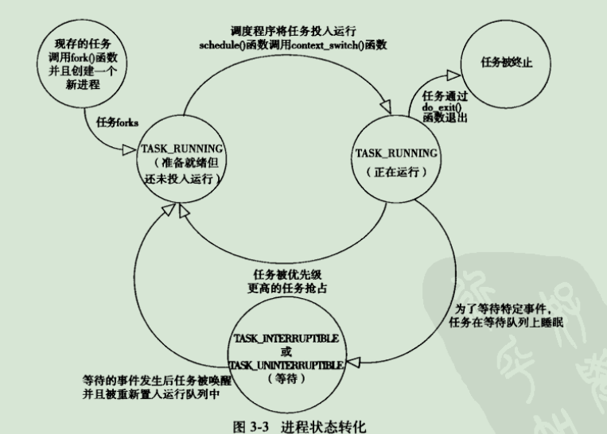
设置当前进程状态
1 | set_task_state(task, state); |
进程上下文
即当一个程序执行了系统调用或者触发了某个异常，它就陷入了内核空间。此时，我们称内核“代表进程执行”并处于进程上下文中。在此上下文中current宏是有效的。除非在此间隙有更高优先级的进程需要执行并由调度器做出了相应调整，否则在内核退出时，程序恢复，在用户空间会继续执行。
系统调用和异常处理程序是对内核明确定义的接口。进程只有通过这些接口才能陷入内核执行——对内核的所有访问都必须通过这些接口。
进程创建
fork()与exec()
fork()通过拷贝当前进程创建一个子进程。子进程与父进程的区别仅仅在于PID、PPID和某些资源和统计量。exec()函数负责读取可执行文件并将其载入地址空间开始运行。
写时拷贝
Linux的fork()使用写时拷贝页实现。写时拷贝是一种可以推迟甚至免除拷贝数据的技术。内核此时并不复制整个进程地址空间，而是让父进程和子进程共享同一个拷贝。
只有在需要写入时，数据才会被复制，从而使各个进程拥有各自的拷贝。
fork()
Linux通过clone()系统调用实现fork()。这个调用通过一系列的参数标志来指明父、子进程需要的共享资源。fork()、vfork()、和__clone()库函数都根据各自需要的参数标志去调用clone()，然后由clone()去调用do_fork()。
do_fork的定义在kernel/fork.c文件中。该函数调用copy_process()函数，然后让进程开始运行。copy_process()函数的工作如下：
- 调用dup_task_struct()为新进程创建一个内核栈、thread_info结构和task_struct，这些值与当前进程的值相同。
- 检查并确保新创建的这个子进程后，当前用户所拥有的进程数目没有超出给它分配的资源的限制。
- 子进程中的进程描述符内的许多成员都要被清0或设为初始值。主要是统计信息。task_struct中的大多数数据都依然未被修改。
- 子进程的状态被设置为TASK_UNINTERRUPTLBLE，以保证它不会投入运行。
- copy_process()调用copy_flags()以更新task_struct的flags成员。表明进程是否拥有超级用户权限的PF_SUPERPRIV标志被清0.表明进程还没有调用exec()函数的PF_FORKNOEXEC标志被设置。
- 调用alloc_pid()为新进程分配一个有效的PID。
- 根据传递给clone()的参数标志，copy_process()拷贝或共享打开的文件、文件系统信息、信号处理函数、进程地址空间和命名空间等。
- 最后，copy_process()做扫尾工作并返回一个指向子进程的指针。
再回到do_fork()函数，如果copy_process()函数成功返回，新创建的子进程被唤醒并让其投入运行，内核有意选择子进程先执行。（因为一般子进程都会马上调用exec()函数，这样可以避免写时拷贝的额外开销。）
vfork()
除了不拷贝父进程的页表项外，vfork()系统调用和fork()的功能相同。
vfork()系统调用的实现是通过向clone()系统调用传递一个特殊标志来进行的。
- 在调用copy_process()时，task_struct的vfork_done成员被设置为NULL。
- 在执行do_fork()时，如果给定特别标志，则vfork_done会指向一个特定地址。
- 子进程先开始执行后，父进程不是马上恢复执行，而是一直等到，直到子进程通过vfork_done指针向他发送信号。
- 在调用mm_release()时，该函数用于进程退出内存地址空间，并且检查vfork_done是否为空，如果不为空，则会向父进程发送信号。
- 回到do_fork()，父进程醒来并返回。
线程在Linux中的实现
创建线程
一个普通的fork()的实现：
1 | clone(SIGCHLD, 0); |
其中SIGCHLD为参数标志，在<linux/sched.h>中定义了clone()用到的参数标志及其作用。
内核线程
内核线程——独立运行在内核空间的标准线程。内核线程和普通的进程间的区别在于内核线程没有独立的地址空间，仅在内核空间运行，从来不切换到用户空间去。
内核线程只能由其他内核线程创建。内核是通过从kthreadd内核进程中衍生出所有新的内核线程来自动处理这一点的。在<linux/kthread.h>中申明有接口。从现有内核线程中创建一个新的内核线程的方法如下：
1 | struct task_struct *kthread_create(int (*threadfn)(void *data)), void *data, const char namefmt[], ...) |
新的任务是由kthread内核进程通过clone()系统调用而创建的。新的进程将允许threadfn函数，给其传递的参数为data。进程名为namefmt，接受可变参数列表类似于printf()的格式化参数。新创建的进程处于不可运行状态，需通过wake_upprocess()明确唤醒它。
创建一个进程并让它运行起来，可以通过调用kthread_run()来达到：
1 | struct task_struct *kthread_run(int (*threadfn)(void *data)), void *data, const char namefmt[], ...) |
该例程以宏实现，仅简单地调用了kthread_create()和wake_up_process()。
内核线程启动后就一直运行知道调用do_exit()退出，或者内核的其他部分调用kthread_stop()退出：
1 | int kthread_stop(struct task_struct *k); |
其中k为kthread_create返回的task_struct结构。
进程终结
一般来说，进程的析构是自身引起的。它发生在进程调用exit()系统调用时（既可能显式调用这个系统调用，也可能隐式地从某个程序的主函数返回）。当进程接受到它既不能处理也不能忽略的信号或异常时，它还可能被动终结。但不管如何终结的，任务大部分都要靠do_exit()（定义于<kernel/exit.c>中）来完成：
- 将task_struct中的标志成员设置为PF_EXITNG。
- 调用del_timer_sync()删除任一内核定时器。根据返回结果，确保没有定时器在排队，也没有定时器处理程序在运行。
- 如果BSD的进程记账功能是开启的，do_exit()调用acct_update_integrals()来输出记账信息。
- 然后调用exit_mm()函数释放进程占用的mm_struct，如果没有别的进程使用它们（即没有被共享），就彻底释放。
- 接下来调用sem_exit()函数。如果进程排队等候IPC信号，则离开队列。
- 调用exit_files()和exit_fs()，以分别递减文件描述符、文件系统数据的引用计数。若其中某个引用计数的数值降为0，那么就代表没有进程在使用相应的资源，此时可以释放。
- 接着把存放在task_struct的exit_code成员中的任务退出代码置为exit()提供的退出代码，或者去完成任何其他由内核机制规定的退出动作。退出代码存放在这里供父进程随时检索。
- 调用exit_notify()向父进程发送信号，给子进程重新找养父，养父为线程组中的其他线程或者为init进程，并把进程状态（存放在task_struct结构的exit_state中）设置成EXIT_ZOMBIE。
- do_exit()调用schedule()切换到新的进程（因为EXIT_ZOMBIE状态的进程不会再被调度，所以这是进程所执行的最后一段代码。do_exit()永不返回）。
至此，进程所占用的所有内存就是内核栈、thread_info结构和task_struct结构。此时进程存在的唯一目的就是向它的父进程提供信息。父进程检索到信息后，或者通知内核那是无关信息后，由进程所持有的剩余内存被释放，归还给系统使用。
删除进程描述符
进程终结时所需的清理工作和进程描述符的删除被分开执行。
wait()这一族函数都是通过唯一的一个系统调用wait4()来实现的。其标准动作是挂起调用它的进程，直到其中一个子进程退出，此时函数会返回该子进程的PID。此时，调用该函数时提供的指针会包含子函数退出时的退出代码。
当最终需要释放进程描述符时，release_task()会被调用：
- 它调用__exit_signal()，该函数调用_unhash_process()，后者又调用detach_pid()从pidhash上删除该进程，同时也要从任务列表中删除该进程。
- __exit_signal()释放目前僵死进程所使用是所有剩余资源，并进行最终统计和记录。
- 如果这个进程是线程组最后一个进程，并且领头进程以及死掉，那么release_task()就要通知僵死的领头进程父进程。
- release_task()调用put_task_struct()释放进程内核栈和thread_info结构所占的页，并释放task_struct所占用的slab高速缓存。
孤儿进程的解决
对于孤儿进程退出时处于僵死状态白白浪费内存放问题，解决方法是给子进程在当前线程组内找一个线程作为父亲，如果不行，就让init做它们的父进程。
- 在do_exit()中会调用exi_notify()，该函数会调用forget_original_parent()，而后者会调用find_new_reaper来执行寻父过程。
- 当找到合适的养父进程时，只需要遍历所有子进程并为它们设置新的父进程。
- 然后调用ptrace_exit_finish()，同样进行新的寻父进程，不过这次是给ptraced的子进程寻找父亲。
一旦系统为进程找到并设置了新的父进程，就不会再出现驻留僵死进程的情况。init进程会例行调用wait()来检查其子进程，清除所有与其相关的僵死进程。
进程调度
多任务
多任务系统可以划分为两类：非抢占式多任务和抢占式多任务。
Linux提供了抢占式多任务模式。此模式下，由调度程序来决定什么时候停止一个进程的运行，以便其他进程能够得到执行的机会。这个强制的挂起动作叫做抢占。
在非抢占式多任务模式下，除非进程自己主动退出，否则它会一直执行。进程主动挂起自己的操作称为让步。
Linux的进程调度
O(l)调度器
- 静态时间片算法
- 运行队列
- 反转楼梯最后期限调度算法(RSDL)
- 完全公平调度算法(CFS)
策略
I/O消耗性和处理器消耗型进程
I/O消耗型进程指进程的大部分时间用来提交I/O请求或者等待I/O请求。这样的进程经常处于可运行状态，但通常都是运行短短一会儿。
处理器消耗型进程大部分时间都在执行代码上，除非被抢占，否则它们通常都一直不停地运行，因为它们没有太多的I/O需求。对于这类进程，调度策略往往是尽量降低它们的调度频率，而延长其运行时间。
调度策略通常要在两个矛盾的目标中间寻求平衡：进程响应迅速和最大系统利用率。Linux为了保证交互应用和桌面系统的性能，所以对进程的响应做了优化，更倾向于优先调度I/O消耗型进程。
进程优化级
Linux采用两种不同的优先级范围：
- 第一种是nice值，范围从-20到+19，默认值为0，越大的nice值意味着更低的优先级。在Linux中，nice值代表时间片的比例。可以通过ps -el命令查看，NI值即为nice值。
- 第二种是实时优先级，默认情况下变化范围是0到99。越高的实时优化级意味着进程优先级越高。任何实时进程的优先级都高于普通的进程。可用ps -eo state,uid,pid,ppid,rtprio,time,comm查看，其中rtprio为实时优先级，若为”-“,则说明不是实时进程。
时间片
时间片是一个数值，它表明进程在被抢占前所能持续运行的时间。
Linux下，是否要将一个进程立刻投入运行，是完全由进程优先级和是否有时间片决定的。在新的CFS调度器中，其抢占时机取决于心底 可运行程序消耗了多少处理器使用比。如果消耗的使用比比当前进程小，则新进程立刻投入运行。
调度策略活动
Linux调度算法
调度器类
linux调度器是以模块方式提供的。这种模块化结构被称为调度器类，它允许多种不同的可动态添加的调度算法并存，调度属于自己范畴的进程。每个调度器都有一个优先级，基础的调度器代码定义在kernel/sched.c文件中。它会安装优先级顺序遍历调度类，拥有一个可执行进程的最高优先级的调度器类生出，去选择下面要执行的那个程序。
完全公平调度(CFS)是一个针对普通进程的调度类，在Linux中称为SCHED_NORMAL，定义在kernel/sched_fair.c中。
公平调度
CFS的出发点基于一个简单的理念：进程调度的效果应如同系统具备一个理想中的完美多任务处理器。在这种系统中，每个进程将能获得1/n的处理器时间。同时，完美可以调度给它们无限小的时间周期，所以在任何可测量周期内，我们给予n个进程中每个进程同样多的运行时间。
CFS允许每个进程运行一段时间、循环轮转、选择运行时间最少的程序作为下一个运行程序。nice值在CFS中被作为进程获得的处理器运行比重。
CFS引入了每个进程获得的时间片底线，这个底线称为最小粒度。默认情况下这个值是1ms。
Linux调度的实现
时间记账
调度器实体结构
CFS使用调度器实体结构（定义在<linux/sched.h>的struct_sched_entity中）来追踪进程运行记账。
调度器实体结构作为一个名为se的成员变量，嵌入在进程描述符内。
虚拟实时
vruntime变量存放进程的虚拟运行时间，该运行时间（花在运行商的时间和）的计算是经过了所有可运行进程总数的标准化。虚拟时间是以ns为单位的。CFS用vruntime变量来记录一个程序到底运行了多长时间以及它还应该再运行多久。
在kernel/sched_fair.c中的update_curr()函数实现了该记账功能。
update_curr()计算了当前进程的执行时间，并且将其存放在变量delta_exec中。然后又将运行时间传递给了__update_curr()，由后者再根据当前可运行进程总数对运行时间进程加权计算。最终将上述的权重值与当前运行进程的vruntime相加。
update_curr()是由系统定时器周期性调用的。
进程选择
CFS调度算法的核心：选择具有最小vruntime的任务。
CFS使用红黑树来组织可运行进程队列，并利用其迅速找到最小vruntime值的进程。
挑选下一个任务
实现这一过程的函数是__pick_next_entity()，它定义在kernel/sched_fair.c中。
向树中加入进程
CFS将进程加入红黑树以及缓存最左叶子节点的过程发送在进程变为可执行状态（被唤醒）或者是通过fork()调用第一次创建进程时。
enqueue_entity()函数实现了这一目的。该函数更新运行时间和其他一些统计数据，然后调用__enqueue_entity()进程繁重的插入操作，把数据项真正插入到红黑树中。
从树中删除进程
删除动作发送在进程堵塞或者终止时。
dequeue_entity()函数实现了这一目的。和添加进程一样，实际工作是由辅助函数__dequeue_entity()完成的。
调度器入口
进程调度的主要入口点是函数schedule()，定义在kernel/sched.c中。schedule()通常需要和一个具体的调度类相关联。该函数唯一重要的事是调用pick_next_task()，用以优先级为序，从高到低，依次检查每一个调度类，并且从最高优先级的调度类中，选择最高优先级的进程。
睡眠和唤醒
休眠（被堵塞）的进程处于一个特殊的不可执行状态。内核对于进程休眠的操作如下：进程把自己标记成休眠状态，从可执行红黑树中移出，放入等待队列，然后调用schedule()选择和执行一个其他进程。唤醒的过程则恰好相反：进程被设置为可执行状态，然后再从等待队列中移到可执行红黑树中。
等待队列
休眠通过等待队列进行处理。等待队列是由等待某些事件发生的进程组成的简单链表。内核用wake_queue_head_t来代表等待队列。
等待队列可以通过DECLARE_WAITQUEU()静态创建，也可以由init_waitqueue_head()动态创建。
进程通过执行以下步骤将自己加入到一个等待队列中：
- 调用宏DEFINE_WAIT()创建一个等待队列的项。
- 调用add_wait_queue()把自己加入到队列中。该队列会在进程等待的条件满足时唤醒它。
- 调用prepare_to_wait()方法将进程的装填变更为TASK_INTERRUPTIBLE或TASK_UNINTERRUPTIBLE。而且该函数如果有必要的话会将进程加回到等待队列，这是在接下来循环遍历中需要的。
- 如果状态被设置为TASK_INTERRUPTIBLE，则信号唤醒进程。
- 当进程被唤醒时，它会再次检查条件是否为真。。如果是，它就退出循环；如果不是，它再次调用schedule()并一直重复这步操作。
- 当条件满足后，进程将自己设置为TASK_RUNNING并调用finish_wait()方法把自己移出等待队列。
函数inotify_read()位于fs/notify/inotify/inotify_user.c中，负责从通知文件描述符中读取信息。
唤醒
唤醒操作通过函数wake_up()进行，它会唤醒指定的等待队列上的所有进程。它调用函数try_to_wake_up()，该函数负责将进程设置为TASK_RUNNING状态，调用enqueue_task()将进程放入红黑树，若唤醒的进程优先级比当前正在执行的进程优先级高，还要设置need_resched标志。
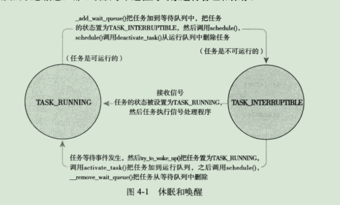
抢占和上下文切换
上下文奇幻，也就是从一个可执行进程切换到另一个可执行进程，由定义在kernel/sched.c中的context_switch()函数负责。它完成了两项基本工作：
- 调用声明在<asm/mmu_context.h>中的switch_mm()，该函数负责把虚拟内存从上一个进程映射切换到新进程中。
- 调用声明在<asm/system.h>中的switch_to()，该函数负责从上一个进程的处理器状态切换到新进程的处理器状态。包括保存、恢复栈信息和寄存器信息，还有其他任何与体系结构相关的状态信息，都必须以每个进程为对象进行管理和保存。
内核提供了一个need_resched标志来表明是否需要重新执行一次调度。当某个进程应该被抢占时，scheduler_tick()就会设置这个标志：当一个优先级高的进程进入可执行状态的时候，try_to_wake_up()也会设置这个标志，内核检查该标志，确认其被设置，调用schedule()来切换到一个新的进程。
在返回用户空间以及从中断返回的时候，内核也会检查need_resched标志。如果已被设置，内核会在继续执行之前调用调度程序。
用户抢占
内核即将返回用户空间的时候，如果need_resched标志被设置，会导致schedule()被调用，此时就会发生用户抢占。用户抢占发生在以下情况时：
- 从系统调用返回用户空间时。
- 从中断处理程序返回用户空间时。
从中断处理程序或者系统系统调用返回的返回路径都是跟体系结构相关的，在entry.s（此文件包含内核入口部分以及内核退出部分的程序）文件中通过汇编语言来实现。
内核抢占
Linux完整地支持内核抢占。只要重新调度是安全的（即没有持有锁），内核可以在任何时间抢占正在执行的任务。
锁是非抢占区域的标志。当使用锁的时候，thread_info中的preempt_count计数器（初始值为0）数值加1，释放锁的时候数值减1。当数值为0时，内核就可以执行抢占。
如果内核中的进程被阻塞了，或者它显式地调用了schedule()，内核抢占也会显式地发生。
内核抢占会发生在：
- 中断处理程序正在执行，且返回内核空间之前。
- 内核代码再一次具有可抢占性的时候。
- 如果内核中的任务显式地调用schedule()。
- 如果内核中的任务阻塞。
实时调度策略
Linux提供了两种实时调度策略：SCHED_FIFO和SCHED_RR。普通的、非实时的调度策略是SCHED_NORMAL。具体实现定义在kernel/sched_rt.c中。
SCHED_FIFO实现了简单的、先入先出的调度算法。处于可运行状态的SCHED_FIFO级进程会比任何SCHED_NORMAL级的进程都先得到调度。一旦一个SCHED_FIFO进程处于可执行状态，就会一直执行，知道它自己受阻塞或显式地释放处理器为止。只有更高优先级的SCHED_FIFO或SCHED_RR任务才可以抢占它。若有两个或多个同优先级的SCHED_FIFO级进程，它们会轮流执行，但依然只有它们愿意让出处理器时才会退出。
SCHED_RR与SCHED_FIFO大体相同。但SCHED_RR级的进程在耗尽事先分配给他的时间后就不能继续执行了。
实时优先级范围从0到MAX_RT_PRIO减1。SCHED_NORMAL级进程的nice值共享了这个取值空间：从MAX_RT_PRIO到MAX_RT_PRIO+40。即nice从-20到+19直接对应100到139的实时优先级范围。
与调度相关的系统调用
系统调用
与内核通信
API、POSIX和C库
系统调用
系统调用号
内核记录了系统调用表中所有已注册过的系统调用的列表，存储在sys_call_talbe中。x86-64体系中，定义于arch/i386/kernel/syscall_64.c中。这个表位每一个有效的系统调用指定了唯一的系统调用号。
系统调用的性能
系统调用处理程序
应用程序以某种方式通知系统，从而使系统切换到内核态，从而内核代表应用程序在内核空间执行系统调用。
通知内核机制是通过软中断实现的：通过引发一个异常来促使系统切换到内核态去执行异常处理程序。此时的异常处理程序即为系统调用处理程序。
指定恰当的系统调用
在x86上，系统调用号是通过eax寄存器传递给内核的。system_call()函数通过将给定的系统调用号与NR_syscalls做笔记来检查其有效性。如果大于或等于NR_syscalls，该函数返回-ENOSYS。否则，就执行相应的系统调用：
1 | call *sys_call_table(,%rax,8); |
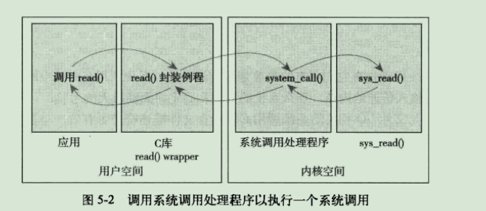
参数传递
系统调用的实现
系统调用上下文
内核在执行系统调用的时候处于进程上下文。current指针指向当前任务，即引发系统调用的进程。
在进程上下文中，内核可以休眠并且可以被抢占。
绑定一个系统调用的步骤
- 首先，在系统调用表的最后加入一个表项（计数从0开始）。每种支持该系统调用的硬件体系都必须做这样的工作。
- 对于所支持的各种体系结构，系统调用号都必须定义于<asm/unistd.h>中。
- 系统调用必须被编译进内核映像（不能被编译成模块）。即放入kernel/下的一个相关文件中就可以了。
内核数据结构
链表
单向链表和双向链表
环形链表
Linux内核的标准链表就是采用环形双向链表形式实现的。
定义于<linux/list.h>
队列
队列为FIFO。
定义于<linux/kfifo.h>
映射
Linux内核提供了简单、有效的映射数据结构，但并非一个通用的映射，因为它的目标是：映射一个唯一的标识数(UID)到一个指针。
二叉树
二叉搜索树
自平衡二叉搜索树
红黑树
rbtree
Linux实现的红黑树叫rbtree，定义于lib/rbtree.c中，声明在<linux/rbtree.h>中。
算法复杂度
中断和中断处理
中断
中断使得硬件得以发出通知给处理器。
中断本质上是一种特殊的电信号，由硬件设备发向处理器。处理器接收到中断后，会马上向操作系统反映此信号的到来，然后就由操作系统负责处理这些新到来的数据。内核随时可能因为新到来的中断而被打断。
中断值通常被称为中断请求（IRQ）线。每个IRQ线都会被关联一个数值量。
异常
异常与中断不同，它在产生时必须考虑与处理器时钟同步。实际上，异常也常常称为同步中断。许多处理器体系结构处理异常与处理中断的方式类似，因此内核对它们的处理也很类似。
在x86体系结构上，通过软中断实现系统调用，那就是陷入内存，然后引起一种特殊的异常——系统调用处理程序异常。
中断处理程序
在响应一个特定中断的时候，内核会执行一个函数，该函数叫做中断处理程序或中断服务例程。一个设备的中断处理程序是它设备驱动程序的一部分——设备驱动程序是用于对设备进行管理的内核代码。
中断处理程序与其他内核函数的区别在于：中断处理程序是被内核调用来响应中断的，而它们运行于我们称之为中断上下文的特殊上下文中。中断上下文也称作原子上下文，该上下文中的执行代码不可阻塞。
上半部与下半部的对比
中断处理程序是上半部——接收到一个中断，它就立即开始执行，但只做有严格时限的工作，例如对接受的中断进行应答或复位硬件，这些工作都是在所有中断被禁止的情况下完成的。能够被允许稍后完成的工作会推迟到下半部去。
注册中断处理程序
驱动程序可以通过request_irq()函数注册一个中断处理程序（声明在<linux/interrupt.h>中）。
中断处理程序标志
定义于<linux/interrupt.h>中。
释放中断处理程序
卸载驱动程序时，需要注销相应的中断处理程序，并释放中断线：
1 | void free_irq(unsigned int irq, void *dev) |
中断上下文
中断处理机制的实现
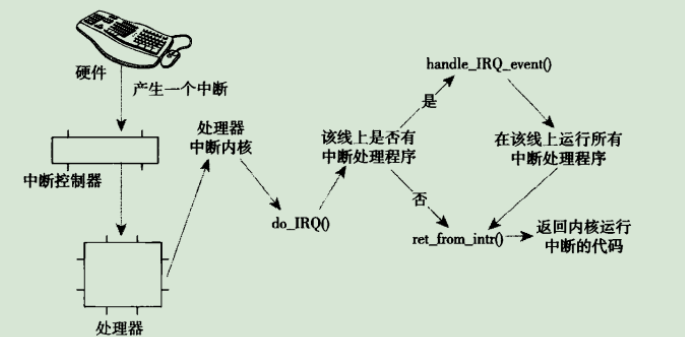
/proc/interrupts
该文件存放的是系统中与中断相关的统计信息。
procfs代码位于fs/proc中。
中断控制
禁止和激活中断
禁止：local_irq_disable();
激活：local_irq_enable();
下半部和推后执行的工作
中断处理流程被分为两部分：第一部分是中断处理程序，内核通过对它的异步执行完成对硬件中断的即时响应；另一部分即为下半部。
下半部
下半部的起源——bottom half(BH)
任务队列
软中断和tasklet
软中断是一组静态定义的下半部接口，有32个，可以在所有处理器上同时执行——即使两个类型相同也可以。必须在编译期间就进行静态注册。
tasklet是一种基于软中断实现的灵活性强、动态创建的下半部实现机制。两个不同类型的tasklet可以在不同的处理器上同时执行，但相同类型的tasklet不能同时执行。可以通过代码进行动态注册。
工作队列
内核定时器
软中断
软中断的代码位于kernel/softirq.c中。
软中断的实现
软中断是在编译期间静态分配的。
软中断处理程序
软中断处理程序action的函数原型如下：
1 | void softirq_handler(struct softirq_action *) |
当内核运行一个软中断处理程序的时候，它就会执行这个action函数，其唯一的参数为指向相应softirq_action结构体的指针。
执行软中断
一个注册的软中断必须在被标记后才会执行，。这被称作触发软中断。通常，中断处理程序会在返回前标记它的软中断。
在下列地方，待处理的软中断会被检查和执行：
- 从一个硬件中断代码处返回时
- 在ksoftirqd内核线程中
- 在显示检查和执行待处理的软中断的代码中。如网络子系统
不管什么办法唤起，软中断都要在do_softirq()中执行。
使用软中断
软中断保留给系统中对时间要求最严格以及最重要的下半部使用。
分配索引
索引号小的软中断在索引号大的软中断之前执行。
建立一个新的软中断必须在<linux/interrupt.h>中定义的一个枚举类型中加入新的项。
注册处理程序
通过调用open_softirq()注册软中断处理程序，该函数含两个参数：软中断的索引号和处理函数。
软中断处理程序执行时，允许响应中断，但它自己不能休眠。在一个处理程序运行的时候，当前处理器上的软中断被禁止，但其他的处理器仍可以执行别的软中断。
触发软中断
raise_softirq()函数可以将一个软中断设置为挂起状态，让它在下次调用do_softirq()函数时投入运行。
tasklet
tasklet的实现
tasklet结构体
1 | struct tasklet_struct{ |
其中state只能在0、TASKLET_STATE_SCHED（已被调度，正准备投入运行）和TASKLET_STATE_RUN（正在运行）之间取值。
若count不为0，则tasklet被禁止，不允许执行。当count为0时，tasklet被激活，并且在设置为挂起状态时，该tasklet才能够执行。
调度tasklet
已调度的tasklet存放在两个单处理器数据结构：tasklet_vec（普通）和tasklet_hi_vec（高优先级）。这两个数据结构都是由tasklet_struct结构体构成的量表。链表中每个tasklet_struct代表一个不同的tasklet。
tasklet由tasklet_schedule()和tasklet_hi_scheduler()函数进行调度。
tasklet_schedule()的执行步骤：
- 检查tasklet的状态是否为TASKLET_STATE_SCHED。如果是，说明tasklet已被调度过了，函数立即返回。
- 调用_tasklet_schedule()。
- 保存中断状态，然后禁止本地中断。
- 把需要调度的tasklet加到每个处理器一个的tasklet_vec链表或tasklet_hi_vec链表的表头上去。
- 唤起TASKLET_SOFTIRQ或HI_SOFTIRQ软中断，这样在下一次调用do_softirq()时就会执行该tasklet。
- 恢复中断到原状态并返回。
tasklet_action()和tasklet_hi_action()：
- 禁止中断，并为当前处理器检索tasklet_vec或tasklet_hig_vec链表。
- 将当前处理器上的该链表设置为NULL，达到清空的效果。
- 允许响应中断。
- 循环遍历获得链表上的每一个待处理的tasklet。
- 如果是多处理器系统，通过检查TASKLET_STATE_RUN来判断这个tasklet是否正在其他处理器上运行。如果它正在运行，那么现在就不要执行，跳到下一个待处理器的tasklet去。
- 如果当前这个tasklet没有执行，将其状态设置为TASKLET_STATE_RUN。
- 检查count值是否为0，确保tasklet没有被禁止；如果被禁止了，则跳转到下一个挂起的tasklet去。
- 执行tasklet的处理器程序。
- tasklet运行完毕，清楚state域的TASK_STATE_RUN状态标志。
- 重复执行下一个tasklet，直至没有剩余等待处理的tasklet。
使用tasklet
声明一个tasklet
静态创建（<linux/interruot.h>中定义）：
1 | DECLARE_TASKLET(name, func, data); //count = 0 |
动态创建：
1 | tasklet_init(t, tasklet_handler, dev); |
编写tasklet处理程序
1 | void tasklet_handler(unsigned long data) |
调度tasklet
一个tasklet总在调度它的处理器上执行，以希望能更好地利用处理器的高速缓存。
可以调用tasklet_disable()来禁止某个指定的tasklet（若该tasklet正在执行，这个函数会等到它执行完毕再返回）。tasklet_disable_nosync()函数也可以用来禁止，无须在返回前等待tasklet执行完毕。
tasklet_enable()可以激活一个tasklet。
tasklet_kill()函数可以从挂起的队列中去掉一个tasklet。这个函数首先等待该tasklet执行完毕，然后再将它移去。
ksoftirqd
每个cpu上都分配有一个ksoftirqd/n线程。一旦该线程被初始化，会执行死循环（优先级较低）。只要有待处理的软中断，ksoftirqd就会调用do_softirq()去处理。当所有需要执行的操作都完成以后，该内核线程将自己设置为TASK_INTERRUPTIBLE状态，唤起调度程序选择其他可执行进程投入运行。
只要do_softirq()函数发现一家执行过的内核线程重新出发了它自己，软中断内核线程就会被唤醒。
老的BH机制
工作队列
工作队列可以把工作推后，交由一个内核线程去执行。工作队列允许重新调度甚至是睡眠。
工作队列的实现
工作队列子系统是一个用于创建内核线程的接口，通过它创建的进程负责执行由内核其他部分排到队列里的任务。创建的这些内核线程称作工作者线程。
表示线程的数据结构
工作者线程的结构：
1 | struct workqueue_struct{ |
表示工作的数据结构
工作用<linux/workqueue.h>中定义的work_struct结构体表示：
1 | struct work_struct{ |
worker_thread()：
- 线程将自己设置为休眠状态，并把自己加入到等待队列中。
- 如果工作链表是空的，线程调用schedule()函数进入睡眠状态。
- 如果链表中有对象，线程不会睡眠，它将自己设置成TASK_RUNNING，脱离等待队列。
- 如果链表非空，调用run_workqueue()函数执行被推后的工作。
run_workqueue()函数遍历链表上每个待处理的工作，执行链表每个节点上的workqueue_struct中的func成员。
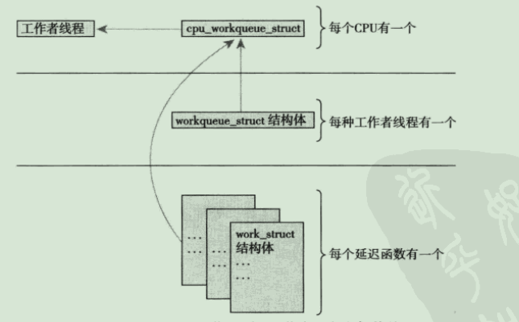
使用工作队列
创建推后的工作
静态创建
1 | DECLARE_WORK(name, void (*func) (void *), void *data); |
动态创建
1 | INIT_WORK(struct work_struct *work, void(*func) (void *), void *data) |
工作队列处理函数
1 | void work_handler(void *data) |
对工作进程调度
1 | schedule_work(&work); //立即执行 |
刷新操作
1 | void flush_scheduled_work(void); |
执行后函数会一直等到，直到队列中所有对象都被执行以后才返回。
注：该函数并不取消任何延迟执行任务。取消延迟执行工作应调用：
1 | int cancel_delayed_work(struct work_struct *work); |
创建新的工作队列
1 | struct workqueue_struct *create_workqueue(const char *name); |
调度：
1 | int queue_work(struct workqueue_struct *wq, struct work_struct *work); |
刷新：
1 | flush_workqueue(struct workqueue_struct *wq); |
内核同步介绍
临界区和条件竞争
临界区就是访问和操作共享数据的代码段。
避免并发和防止条件竞争称为同步。
加锁
内核中造成并发执行的原因：
- 中断
- 软中断和tasklet
- 内核抢占
- 睡眠及用户空间的同步
- 对称多处理
死锁
争用和扩展性
锁的争用（简称争用），是指当锁正在被占用时，有其他线程试图获得该锁。
内核同步方法
原子操作
原子操作即不能被分割的指令。
原子整数操作
针对整数的原子操作只能对atomic_t类型的数据进行处理。atomic_t类型定义在<linux/types.h>中：
1 | typedef struct{ |
原子整数操作的声明都在<asm/atomic.h>中。
1 | atomic_set(&v,4); //v = 4; |
可用atomic_read()将atomic_t转换为int型。
64位原子操作
atomic64_t：
1 | typedef struct{ |
原子位操作
定义在<asm/bitops.h>中。
自旋锁
自旋锁最多只能被一个可执行线程持有。
一个被争用的自旋锁使得请求它的线程在等待锁重新可用时自旋。
自旋锁方法
自旋锁的实现与体系结构密切相关，与体系结构相关的代码定义在<asm/spinlock.h>中，接口定义在<linux/spinlock.h>中。自旋锁的基本使用形式如下：
1 | DEFINE_SPINLOCK(mr_lock); |
自旋锁可以使用在中断处理程序中。所以在中断处理程序中使用自旋锁时，一定要在获取锁之前，首先禁止本地中断：
1 | DEFINE_SPINLOCK(mr_lock); |
其他针对自旋锁的操作
自旋锁和下半部
读-写自旋锁
信号量
Linux中的信号量是一种睡眠锁：如果有一个任务试图获得一个不可用（已被占用）的信号量时，信号量会将其推进一个等待队列，然后让其睡眠。当持有的信号量可用（被释放）后，处于等待队列中 的那个任务将被唤醒，并获得该信号量。
计数信号量和二值信号量
二值信号量又称互斥信号量。
创建和初始化信号量
信号量的实现与体系结构相关，具体定义在<asm/semaphore.h>。
使用信号量
读-写信号量
定义在文件<linux/rwsem.h>中。
所有的读-写信号量都是互斥信号量。
互斥体
完成变量
完成变量由结构completion表示，定义在<linux/completion.h>中。
BKL：大内核锁
BKL的一些特性：
持有BKL的任务仍然可睡眠。
BKL是一种递归锁。
BKL只可以用在进程上下文中。
新的用户不允许使用BKL
BKL在被持有时同样会禁止内核抢占。
顺序锁
禁止抢占
顺序和屏障
rmb()方法提供了一个“读”内存屏障，它确保跨越rmb()的载入动作不会发生重排序。
wmb()方式提供是一个“写”内存屏障，区别仅仅是它是针对存储而非载入——它确保跨越屏障的存储不发生重排序。
mb()方法既提供了读屏障也提供了写屏障。载入和存储动作都不会跨越屏障重新排序。
定时器和时间管理
系统定时器是一种可编程硬件芯片，它能以固定频率产生中断。该中断就是所谓的定时器中断。
内核中的时间概念
节拍率：HZ
内核在<asm/param.h>中定义了这个值
Jiffies
全局变量jiffies用来记录自系统启动以来产生的节拍总数。启动时，内核将该变量初始化为0。
定义在<linux/jiffies.h>中。
用户空间和HZ
硬时钟和定时器
实时时钟
实时时钟(RTC)是用来持久存放系统时间的设备，即便系统关闭后，它也可以靠主板上的微型电池提供的电力保持系统的计时。在PC体系结构中，RTC和CMOS集成在一起，而且RTC的运行和BIOS的保持设置都是通过一个电池供电的。
系统定时器
在x86体系结构中，主要采用可编程中断时钟(PIT)。PIT在PC机器中普遍存在。内核在启动时对PIT进行编程初始化，使其能够以HZ/秒的频率产生时钟中断。
时钟中断处理程序
时钟中断处理程序可以划分为两个部分：体系结构相关部分和体系结构无关部分。
与体系结构相关的例程作为系统定时器的中断处理程序而注册到内核中，以便在产生时钟中断时，它能够相应地运行：
- 获得xtime_lock锁，以便对访问jiffies_64和墙上时间xtime进行保护。
- 需要时应答或重新设置系统时钟。
- 周期性地使用墙上时间更新实时时钟。
- 调用体系结构无关的时钟例程：tick_periodic()。
中断处理程序主要通过调用与体系结构无关的例程，tick_periodic()执行下面更多工作：
- 给jiffies_64变量加一。
- 更新资源消耗的统计值，比如当前进程所消耗的系统时间和用户时间。
- 执行已经到期的动态定时器。
- 执行sheduler_tick()函数。
- 更新墙上时间，该时间存放在xtime变量中。
- 计算平均负载值。
实际时间
当前实际时间（墙上时间）定义在文件kernel/time/timekeeping.c中。
定时器
使用定时器
当前节拍计数等于或大于指定超时时，内核就开始执行定时器处理函数。
当del_timer()返回后，可以保证的只是将来不会再被激活，但是在多处理器机器上的定时器中断可能已经在其他处理器上运行了。
定时器竞争条件
实现定时器
延迟执行
忙等待
忙等待（忙循环）的实现很简单——在循环中不断旋转直到希望的时钟节拍数耗尽。
短延迟
schedule_timeout()
该方法会让需要延迟执行的任务睡眠到指定的延迟时间耗尽后再重新运行。但该方法也不能保证睡眠时间正好等于指定的延迟时间，只能尽量使睡眠时间接近指定的延迟时间。当指定的时间到期后，内核唤醒被延迟的任务并将其重新放回运行队列。
在调用该方法前，必须首先将任务设置为TASK_INTERRUPTIBLE或TASK_UNINTERRUPTIBLE两种状态之一，否则任务不会睡眠。
schedule_timeout()的实现
该函数用原始的名字timer创建了一个定时器timer，然后设置超时时间timeout，设置超时执行函数process_timeout()；接着激活定时器而且调用schedule()。因为任务标识为TASK_INTERRUPTIBLE或TASK_UNINTERRUPTIBLE，所以调度程序不会再选择该任务投入运行，而会选择其他新任务运行。
当定时器超时时，process_timeout()函数会被调用，将任务设置为TASK_RUNNING状态，然后将其放入运行队列。
如果任务提前被唤醒（如收到信号），那么定时器被撤销，process_timeout()函数返回剩余的时间。
内存管理
页
内核把物理页作为内存管理的基本单位。
内核用struct page结构表示系统中的每个物理页，该结构位于<linux/mm_types.h>：
1 | struct page { |
一个页可也由页缓存使用（这时，mapping域指向这个页关联的address_space对象），或者作为私有数据（由private指向），或者作为进程页表中的映射。
page结构与物理页相关，因此，该结构对页的描述只是短暂的。
区
Linux主要使用了四种区：
ZONE_DMA——这个区包含的页能用来执行DMA操作。
ZONE_DMA32——这个区与ZONE_DMA不同之处在于这些页面只能被32位设备访问。
ZONE_NORMAL——这个区包含的都是能正常映射的页。
ZONE_HIGHEM——这个区包含“高端内存”，其中的页并不能永久地映射到内核地址空间。
这些区定义在<linux/mmzone.h>中。
每个区都用struct zone表示，定义在<linux/mmzone.h>中：
1 | struct zone { |
内核启动期间初始化name值，代码位于mm/page_alloc.c中。
获得页
内核提供了请求内存的底层机制，并提供了对它进行访问的几个接口，所有接口都以页为单位分配内存，定义于<linux/gfp.h>中。
kmalloc()
所分配的内存在物理上是连续的。
kmalloc()在<linux/slab.h>中声明。
1 | void * kmalloc(size_t size, gfp_t flags); |
gfp_mask标志
这些标志可以分为三类：行为修饰符、区修饰符及类型。
所有标志在<linux/gfp.h>中声明。
行为修饰符
表示内核应当如何分配所需的内存。
区修饰
表示从哪儿分配内存。
类型
组合了行为修饰和区修饰，将各种组合归纳为不同类型。
kfree()
kfree(NULL)是安全的。
vmalloc()
该函数工作方式类似于kmalloc()，只不过分配的内存虚拟地址连续，而物理地址则无须连续。
vmalloc()函数声明在<linux/vmalloc.h>中，定义在<mm/vmalloc.c>中。
获得的内存可用vfree()释放。
slab层
slab层的设计
每个高速缓存可用由多个slab组成，slab由一个或多个物理上连续的页组成。每个slab都包含一些对象成员。每个slab处于三种状态之一：满、部分满或空。
当内核的某一部分需要一个新的对象时，先从部分满的slab中进行分配；如果没有部分满的slab，就从空的slab中进行分配；如果没有空的slab，就要创建一个slab了。
例如，struct inode就由inode_cachep高速缓存进行分配，这种高速缓存由一个或多个slab组成，每个slab包含尽可能多的struct inode对象。
每个高速缓存都使用kmem_cache结构来表示，这个结构包含三个链表：slabs_full、slabs_partial和slabs_empty，均存放在kmem_list3结构内，该结构在mm/slab.c中定义。这些链表包含的高速缓存中的所有slab。
slab描述符struct slab用来描述每个slab：
1 | struct slab{ |
slab描述符要么在slab之外另行分配，要么就放在slab自身开始的地方。如果slab很小，或者slab内存有足够的空间容纳slab描述符，那么描述符就存放在slab里面。
slab分配器可以创建新的slab，这是通过__get_free_pages()低级内核页分配器进行的。
只有在下列情况下才会调用释放函数：当可用内存变得紧缺时，系统试图释放出更多内存以供使用；或者当高速缓存显式地被撤销时。
slab分配器接口
在栈上的静态分配
单页内核栈
中断栈为每个进程提供一个用于中断处理程序的栈。
高端内存的映射
永久映射
要映射一个给定的page结构到内核地址空间，可以使用定义在文件<linux/highmem.h>中的这个函数：
1 | void *kmap(struct page *page); |
这个函数可以睡眠，因此只能用在进程上下文中。
解除映射：
1 | void kunmap(struct page *page); |
临时映射
临时银蛇可以用在不能睡眠的地方，因为获取映射时绝不会阻塞，同时禁止内核抢占：
1 | void *kmap_atomic(struct page *page, enum km_type type); |
参数type描述了临时映射的目的，定义于<asm/kmap_types.h>中。
取消映射：
1 | void kunmap_atomic(void *kvaddr, enum km_type type); |
除非激活了内核抢占，否则kunmap_atomic()无须做什么实际的事情，只有在下一个临时映射到来前上一个临时映射才有效。下一个原子映射将自动覆盖前一个映射。
每个CPU的分配
新的每个CPU接口
<linux/percpu.h>中声明了所有接口操作例程，可以在mm/slab.c和<asm/percpu.h>中找到定义。
虚拟文件系统
VFS使得用户可以直接使用open()、read()和write()这样的系统调用而无须考虑具体文件系统和实际物理介质。
文件系统抽象层
VFS提供了一个通用文件系统模型，该模型囊括了任何文件系统的常用功能集合行文。
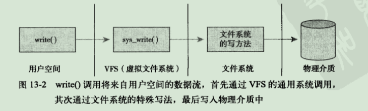
Unix文件系统
Unix使用了四种和文件系统相关的传统抽象概念：文件、目录项、索引节点和安装点。
在Unix中，文件系统被安装在一个特定的安装点上，该安装点在全局层次结构中被称作命名空间，所有的已安装文件系统都作为根文件系统树的枝叶出现在系统中。
Unix系统将文件的相关信息和文件本身这两个概念加以区分。文件相关信息有时被称作文件的元数据，被存储在一个单独的数据结构中，该结构被称为索引节点。
文件系统的控制信息存储在超级块中，超级块是一种包含文件系统信息的数据结构。
VFS对象及其数据结构
VFS中有四个主要的对象类型：
- 超级块对象——它代表一个具体的已安装的文件系统。
- 索引节点对象——它代表一个具体文件。
- 目录项对象——它代表一个目录项，是路径的一个组成部分。
- 文件对象——它代表由进程打开的文件。
每个主要对象中都包含一个操作对象，这些操作对象描述了内核针对主要对象可以使用的方法：
- super_operations对象，其中包括内核针对特定文件系统所能调用的方法，如write_inode()和sysnc_fs()等方法。
- inode_operations对象，其中包括内核针对特定文件所能调用的方法，比如create()和link()等方法。
- dentry_operations对象，其中包括内核针对特定目录所能调用的方法，比如d_compare()和d_delete等方法。
- file_operations对象，其中包括针对针对已打开文件所能调用的方法，比如read()和write()等方法。
操作对象作为一个结构体指针来实现，此结构体重包含指向操作其父对象的函数指针。
超级块对象
该对象用于存储特定文件系统的信息，通常对应于存放在磁盘待定扇区中的文件系统超级块或文件系统控制块。
超级块对象由super_block结构体表示，定义在<linux/fs.h>中。
创建、管理和撤销超级快对象的代码位于文件fs/super.c中。
超级块操作
操作块对象中的s_op域指向超级块的操作函数表。超级块操作函数表又super_operations结构体表示，定义在文件<linux/fs.h>中。
超级块操作函数都是由VFS在进程上下文中调用。除了dirty_inode()，其他函数在必要时都可以阻塞。
如果VFS发现操作函数指针是NULL，那么它要么就会调用通用函数执行相应操作，要么什么也不做。
索引节点对象
索引节点对象包含了内核在操作文件或目录时需要的全部信息。
索引节点对象由inode结构体表示，它定义在文件<linux/fs.h>中。
索引节点仅当文件被访问时，才在内存中创建。
索引节点操作
索引节点对象中用i_op(inode_operations)来存储操作函数表，该结构体定义在文件<linux/fs.h>中。
目录项对象
目录项对象由dentry结构体表示，定义在<linux/dcache.h>中。
目录项状态
目录项对象有三种有效状态：被使用、未被使用和负状态。
一个被使用的目录项对应一个有效的索引节点，并且表明该对象存在一个或多个使用者（d_count为正值）。一个目录项处于被使用状态，意味着它正被VFS使用并且指向有效的数据，因此不能被丢弃。
一个被使用的目录项对应一个有效的索引节点，但是d_count为0,。该目录表项仍然指向一个有效对象，而且被保留在缓存中以便需要时使用它。
一个负状态的目录项没有对应的有效索引节点（d_inode为NULL），因为索引节点已被删除，或路径不再正确，但是目录项仍然保留，以便快速解析以后的路径查询。
目录项缓存
内核将目录项对象缓存在目录项缓存（dcache）中。目录项缓存包括三个主要部分：
- “被使用的”目录项链表。将链表通过所以节点对象中的i_dentry项链接相关的索引节点。
- “最近被使用的”双向链表。该链表含有未被使用和负状态的目录项对象。因为该链表总是在头部插入目录项，故链头节点的数据总比链尾节点的数据要新。删除时，从链尾删除节点项。
- 散列表和相应的散列函数用来快速地将给定路径解析为相关目录项对象。
散列表由数组dentry_hashtable表示，其中每个元素都是一个指向具有相同键值的目录项对象链表指针。
实际的散列值由d_hash()函数计算。
查找散列表要通过d_lookup()函数。
目录项操作
dentry_operation结构体指明了VFS操作目录项的所有方法，该结构体定义在文件<linux/dcache.h>中。
文件对象
文件对象表示进程已打开的文件。
文件对象由file结构体表示，定义在文件<linux/fs.h>中。
文件对象通过f_dentry指针指向相关的目录项对象。
文件操作
文件对象的操作由file_operations结构体表示，定义在文件<linux/fs.h>中。
和文件系统相关的数据结构
file_system_type——该结构用来描述各种特定文件系统类型，如ext3、ext4或UDF。
vfsmount——用来描述一个安装文件系统的实例。
file_system_type定义在<linux/fs.h>中。
每种文件系统，不管有多少实例安装到系统中，还是根本没有安装到系统中，都只有一个file_system_type结构。
当文件系统被实际安装时，将有一个vfsmount结构体在安装点被创建。vfsmount结构被定义在<linux/mount.h>中。
vfsmount保存了安装时指定的标志信息，存储在mnt_flages域中。标志信息定义在<linux/mount.h>中。
和进程相关的数据结构
有三个数据结构将VFS层和系统的进程联系在一起，分别是：file_struct、fs_struct和namespace结构体。
file_struct结构体定义在<linux/fdtable.h>中。该结构体由进程描述符中的files目录项指向。所有与单个进程相关的信息都包含在其中。
fs_struct结构体定义在<linus/fs_struct.h>中。该结构体由进程描述符的fs域指向。它包含文件系统和进程相关的信息。
namespace结构体定义在<linux/mmt_namespace.h>中。由进程描述符中的mmt_namespace域指向。单进程命名空间使得每一个进程在系统中都看的唯一的安装文件系统——不仅是唯一的根目录，而且是唯一的文件系统层次结构。
默认情况下，所有进程共享同一命名空间。只有在clone()操作时使用CLONE_NEWS标志，才会给进程一个唯一的命名空间结构体的拷贝。
块I/O层
系统中能随机（不按顺序）访问固定大小数据片的硬件设备称作块设备。这些固定大小的数据片就称作块。
字符设备按照字符流的方式被有序访问。
剖析一个块设备
块设备中最小的可寻址单元是扇区（有时也称作“硬扇区”、“设备块”）。
块（也称作“文件块”或“I/O块”）是最小逻辑可寻址单元，块是文件系统的一种抽象——只能基于块来访问文件系统。块只能数倍于扇区大小。
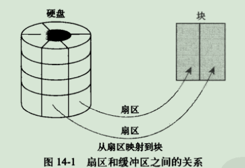
缓冲区与缓冲区头
当一个块被调入内存时（即在读入后或等待写出时），它要存储在一个缓冲区中。每个缓冲区与一个块对应，它相当与是磁盘块在内存中的表示。
每一个缓冲区都有一个对应的描述，该描述符用buffer_head结构体表示，称作缓冲区头定义在文件<linux/buffer_head.h>中，它包含了内核操作缓冲区所需要的全部信息。
1 | struct buffer_head { |
其中b_state表示缓冲区状态。合法标志存放在bh_state_bits枚举中，该枚举在<linux/buffer_head.h>中定义。
b_count域表示缓冲区的使用计数，可以通过两个定义在文件<linux/buffer_head.h>中的内联函数对此域进行增减。
与缓冲区对应的磁盘物理块由b_blocknr-th域索引，该值是b_bdev域指明的块设备中的逻辑块号。
与缓冲区对应的内存物理页由b_page域表示。另外，b_data域直接指向相应的块，块的大小由b_size域表示。
缓冲头的目的在于描述磁盘块和物理内存缓冲区之间的映射关系。
bio结构体
内核中块I/O操作的基本容器由bio结构体表示，定义在<linux/bio.h>中。该结构代表了正在现场的（活动的）以及片段链表形式组织的块I/O操作。一个片段是一小块连续的内存缓冲区。
1 | struct bio { |
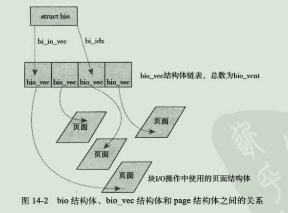
I/O向量
bi_io_vec域指向一个bio_vec结构体数组，该结构体链表包含了一个特定I/O操作所需要使用到的片段。每个bio_vec结构都是一个形式为<page,offset,len>的向量，它描述的是一个特定的片段：片段所在的物理页、块在物理页中的偏移位置、从给定偏移量开始的块长度。整个bio_io_vec结构体数组表示了一个完成的缓冲区。bio_vec结构定义在<linux/bio.h>中。
bi_cnt域用来描述bi_io_vec所指向的bio_vec数组中的向量数目。当块I/O操作执行完毕后，bi_idx域指向数组的当前索引。
bi_cnt若为0，则应该撤销该bio结构体，并释放它占用的内存。
bi_private域是属于拥有者（即创建者）的私有域，只有创建了bio结构的拥有者可以读写该域。
请求队列
块设备将它们挂起的块I/O请求保存在请求队列中，该队列由reques_queue结构体表示，定义在<linux/blkdev.h>中，包含一个双向请求链表以及相关控制信息。
请求队列表中每一项都是一个单独的请求，由结构体request表示，定义在文件<linux/blkdev.h>中。每个请求可以由多个bio结构体组成。
I/O调度程序
内核中负责请求I/O请求的子系统称为I/O调度程序。
I/O调度程序将磁盘I/O资源分配给系统中所有挂起的块I/O请求。具体地说，这种资源分配是通过请求队列中挂起的请求合并和排序来完成的。
I/O调度程序的工作
I/O调度程序的工作是管理设备的请求队列。它决定队列中的请求排序顺序以及在什么时刻派发请求到块设备。
I/O调度程序通过两种方法减少磁盘寻址时间：合并与排序。
合并指将两个或多个请求结合成一个新请求。
整个请求队列将按扇区增长方向有序排列。该排序算法类似于电梯调度。所以I/O程序（或这种排序算法）称作电梯调度。
Linus电梯
Linus电梯能执行合并与排序预处理。
当一个请求加入队列中时，有可能发生四种操作：
- 如果队列中已存在一个对相邻磁盘扇区操作的请求，那么新请求将和这个已经存在的请求合并成一个请求。
- 如果队列中存在一个驻留时间过长的请求，那么新请求将被插入到队列尾部，以防止其他旧的请求饥饿发生。
- 如果队列中以扇区方向为序而存在合适的插入位置，那么新的请求将被插入到该位置，保证队列中的请求是以被访问磁盘物理位置为序进行排列的。
- 如果队列中不存在合适的请求插入位置，请求将被插入到队列尾部。
最终期限I/O调度程序
在最后期限I/O调度程序中，每个请求都有一个超时时间。
最后期限I/O调度请求以磁盘物理位置为次序维护请求队列，这个队列称为排序队列。读请求按次序被插入到特定的读FIFO队列中，写请求被插入到特定的写FIFO队列中。
对于普通操作来说，最后期限I/O调度程序将请求从排序队列头部取下，再推入到派发队列中，然后派发队列将请求提交给磁盘驱动，从而保证了最小化的请求寻址。
如果在写FIFO队列头，或是读FIFO队列头的请求超时，那么最后期限I/O调度程序便从FIFO队列中提取请求进行服务。
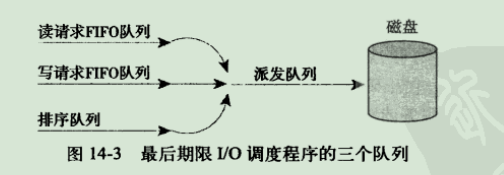
最后期限I/O调度程序的实现在block/deadline-iosched.c中。
预测I/O调度程序
预测I/O调度程序也实现了三个队列（加上一个派发队列），并为每个请求设置了超时时间。同时还增加了预测启发能力。
预测I/O调度程序在请求提交后并不直接返回处理其他请求，而是会有意空闲片刻（可设置，默认6ms）。这个空闲时间内，任何对相邻磁盘位置操作的请求都会立刻得到处理。在等待时间结束后，预测I/O调度程序重新返回原来的位置，继续执行以前剩下的请求。
预测I/O调度程序的实现在文件内核源代码树的block/as-iosched.c中。
完全公正的排队I/O调度程序(CFQ)
CFQ I/O调度程序把进入I/O请求放入特定的队列中，这种队列是根据引起I/O请求的进程组织的。每个队列中，刚进入的请求与相邻请求合并在一起，并进行插入分类。队列由此按扇区方式分类。
CFQ I/O调度程序以时间片轮转调度队列，每个队列中选取请求数，然后进行下一轮调度。
完全公正的排队I/O调度程序位于block/cfg-iosched.c。
空操作的I/O调度程序
空操作(Noop)I/O调度程序不进行排序，也不进行其他形式的预寻址操作。但仍执行合并操作：当一个新的请求提交到队列时，就把它与任一相邻的请求合并，它只是维护请求队列以近乎FIFO的顺序排列，块设备驱动程序便可以从这种队列中摘取请求。
空操作i/o调度程序位于block/noop-iosched.c，它是专为随机访问设备而设计的。
I/O调度程序的选择
可以通过命令行选项：elevator=foo来启用foo（有效而激活的I/O调度程序）给所有的块设备。
进程地址空间
地址空间
进程地址空间由进程可寻址的虚拟内存组成。每一个进程都有一个32或64位的平坦(flat)地址空间，空间的具体大小取决于体系结构。平坦指的是地址空间范围是一个独立的连续区间。
一个进程的地址空间与另一个进程的地址空间即使有相同的内存地址，实际上也彼此互不相干，我们称这样的进程为线程。
可被访问的合法地址空间称为内存区域。通过内核，进程可以给自己的地址空间动态地添加或减少内存区域。
进程只能访问有效内存区域内的内存地址。
内存描述符
内核使用内存描述符结构体表示进程的地址空间。内存描述符由mm_struct结构体表示，定义在<linux/mm_types.h>中。
1 | struct mm_struct { |
mm_users域记录正在使用该地址的进程数目。mm_count域是mm_struct结构体的主引用计数。如果mm_users减为0，则mm_count减1。若mm_count为0，则说明没有任何指向该mm_struct结构体的引用了，这时该结构体会被撤销。当内核在一个地址空间上操作，并需要使用与该地址相关联的引用计数时，内核便增加mm_count。
mmap和mm_rb这两个不同的数据结构体描述的对象是相同的：该地址空间中的全部内存区域。但mmap以链表形式存放，而mm_rb以红-黑树形式存放。
所有的mm_struct结构体都通过自身的mmlist域链接在一个双向链表中，该链表的首元素是init_mm内存描述符，它代表init进程的地址空间。
分配内存描述符
在进程的进程描述符中的mm预存放着该进程使用的内存描述符。
撤销内存描述符
当进程退出时，内核会调用定义在kernel/exit.c中的exit_mm()函数，该函数执行一些常规的撤销工作，同时更新一些统计量。
mm_struct与内核线程
内核线程没有进程地址空间，也没有相关的内存描述符，所以内核线程对应的进程描述符中的mm域为空。
为了避免内核线程为内存描述符合页表浪费内存，也为了当新内核线程运行时，避免浪费处理器周期向新地址空间进行切换，内核将直接使用前一个进程的内存描述符。
虚拟内存区域
内存区域由vm_area_struct结构体表示，定义在<linux/mm_types.h>中。内存区域在Linux内核中也经常被称作虚拟内存区域（VMAS）。
vm_area_struct结构体描述了指定地址空间内连续区间上的一个独立内存范围。
1 | struct vm_area_struct { |
每个内存描述符都对应于进程地址空间中的唯一区间。
vm_mm域指向和VMA相关的mm_struct结构体。注：每个VMA对其相关的mm_struct结构体来说都是唯一的。
VMA标志
VMA标志是一种位标志，定义在<linux/mm.h>中。其包含在vm_flags域内，标志了内存区域所包含的页面的行为和信息。
VMA操作
vm_ops域指向与指定内存区域相关的操作函数表，内核使用表中的方法操作VMA。
操作函数表由vm_operations_struct结构体表示，定义在文件<linux/mm.h>中。
内存区域的树型结构和内存区域的链表结构
mmap域使用单独链表连接所有的内存区域对象。每一个vm_area_struct结构体通过自身的vm_next域被连入链表，所有区域按地址增长的方向排序，mmap域指向链表中第一个内存区域，链表中最后一个结构体指针指向空。
mm_rb域使用红-黑树连接所有的内存区域对象。mm_rb域指向红-黑树的根节点，地址空间中每一个vm_area_struct结构体通过自身的vm_rb域连接到树中。
实际中使用的内存区域文件
可以使用/proc文件系统和pmmap工具查看给定进程的内存空间和其中所包含的内存区域。
/proc/<pid>/maps的输出显示了进程地址空间中的全部内存区域。
没有映射文件的内存区域的设备标志位00:00，索引节点标志也为0，这个区域就是零页——零页映射的内存全为0。如果零页映射到可写的内存区域，那么该区域将全被初始化为0。
操作内存区域
为方便执行对内存区域的操作，内核定义了许多辅助函数，它们都声明在<linux/mm.h>中。
mmap()和do_mmap():创建地址区间
内核使用do_mmap()函数创建一个新的线性地址区间。
do_mmap()函数定义在文件<linux/mm.h>中。
如果系统调用do_mmap()的参数中有无效参数，那么它返回一个负值；否则，它会在虚拟内存中分配一个合适的新内存区域。如果有可能的话，将新区域和邻近区域进行合并，否则内核从vm_area_cachep长字节(slab)缓存中分配一个vm_area_struct结构体，并使用vm_link()函数将新分配的内存区域添加到地址空间的内存区域链表和红-黑树中，随后还要更新内存描述符中的total_vm域，然后才返回新分配的地址区间的初始地址。
在用户空间可以通过mmap()系统调用获取内核函数do_mmap()的功能。
mummap()和do_mummap()：删除地址区间
do_mummap()函数从特定的进程地址空间中删除指定地址区间，该函数定义在文件<linux/mm.h>中。
系统调用mummap()给用户空间提供了一种从自身地址空间中删除指定地址区间的方法。该系统调用定义在文件mm/map.c中，它是对do_mummap()函数的一个简单的封装。
页表
当用程序访问一个虚拟地址时，首先必须将虚拟地址转化为物理地址，然后处理器才能解析地址访问请求。地址的转换工作需要通过查询页表才能完成。
Linux中使用三级页表完成地址转换：
- 顶级页表是页全局目录（PGD），它包含一个pgd_t类型数组，多数体系结构中pgd_t类型等同于无符号长整型类型。PGD中的表项指向二级页目录中的表项：PMD。
- 二级页表是中间页目录（PMD），它是个pmd_t类型数组，其中的表项指向PTE中的表项。
- 最后一级的页表简称页表，其中包含了pte_t类型的页表项，该页表项指向物理页面。
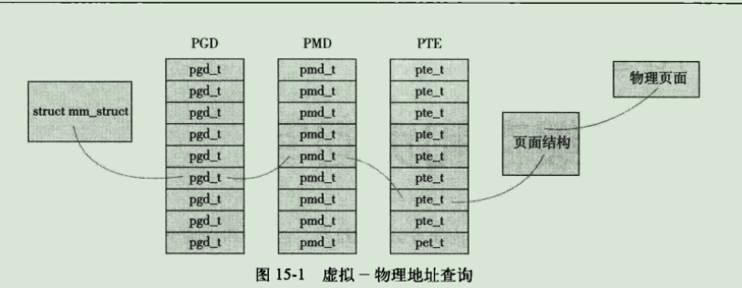
每个进程都有自己的页表（线程会共享页表），内存描述符的pgd域指向的就是进程的页全局目录。
页表对应的结构体依赖于具体的体系结构，定义在<asm/page.h>中。
为了加快搜索，多数体系结构都实现了一个翻译后缓冲器（TLB）。TLB作为一个将虚拟地址映射到物理地址的硬件缓存，当请求访问一个虚拟地址时，处理器首先检查TLB中是否缓存了该虚拟地址到物理地址的映射，如果在缓存中直接命中，物理地址立刻返回；否则，就需要再通过页表搜索需要的物理地址。
页高速缓存和页回写
页高速缓存是Linux内核实现磁盘缓存。主要用来减少对磁盘I/O操作。
缓存手段
页高速缓存是由内存中的物理页面组成的，其内容对应磁盘上的物理块。页高速缓存大小能动态调整，我们称正被缓存的存储设备为后备存储。
写缓存
缓存一般被实现下面三种策略之一：
第一种策略，不缓存，即高速缓存不去缓存任何写操作。
第二种策略，写操作自动更新内存缓冲，同时也更新磁盘文件，这种方式，通常称为写透缓存。
第三种策略，也是Linux所采用的，称为“回写”。这种策略下，程序执行写操作直接写到缓存中，后端存储不会立刻直接更新，而是将页高速缓存中被写入的页面标记成“赃”，并且被加入到赃页链表中。然后由一个进程（回写进程）周期性将赃页链表中的页写回到磁盘中，然后再清理“赃”页标志。
缓存回收
决定缓存中什么内容将被清除的策略，被称为缓存回收策略。
Linux的缓存回收是通过选择干净页进行简单的替换。如果缓存中没有足够的干净页面，内核将强制地进行回写操作，以腾出更多的干净可用页。
最近最少使用
缓存回收策略通过所访问的数据特性，尽量追求预测效率。最成功的算法称作最近最少使用算法(LRU)。
LRU回收策略需要跟着每个页面的访问踪迹（或者至少按照访问时间为序的页链表），以便能回收最老时间戳的页面（或者回收排序链表头所指的页面）
双链策略
Linux实现的是一个修改过的LRU，也称为双链策略。
Linux维护两个链表：活跃链表和非活跃链表。处于活跃链表上的页面不会被换出，而在非活跃链表上的页面则是可以被换出的。在活跃链表中的页面必须在其被访问时就处于非活跃链表中。
两个链表都被伪LRU规则维护：页面从尾部加入，从头部移除，如同队列。两个链表需要维持平衡——如果活跃链表变得过多而超过了非活跃链表，那么活跃链表的头页面将被重新移回到非活跃链表中，以便能再被回收。
Linux页高速缓存
页高速缓存缓存的是内存页面。
address_space对象
为了维持页高速缓存的普遍性，Linux页高速缓存使用了一个新对象管理缓存项和页I/O操作，这个对象是address_space结构体，定义在文件<linux/fs.h>中。这个结构体是vm_area_struct的物理地址对等体。
1 | struct address_space { |
其中i_mmap字段是一个优先搜索树，它的搜索范围包括了再address_spcae中所有共享的私有映射页面。
address_space页总数由nrpage描述。
address_spcae结构体与索引节点（inode）关联，这时host域会指向该索引节点；如果关联对象不是一个索引节点的话，host域会被置为NULL。
address_spcae操作
a_ops域指向地址空间对象中的操作函数表，定义在文件<linux/fs.h>中，由address_space_operations结构来表示。
每个后备存储都通过自己的address_space_operation描述自己如何与页高速缓存交互。
基树
每个address_space对象都有唯一的基树，它保存在page_tree结构体中。
基树是一个二叉树，只要指定了文件偏移量，就可以在基树中迅速检索到希望的页。
基树核心代码的通用形式可以在文件lib/radix-tree.c中找到，声明在<linux/radix_tree.h>中。
缓冲区高速缓存
缓存的作用是映射内存中的页面到磁盘块，从而在块I/O操作时也减少了磁盘访问。这个缓存通常称为缓冲区高速缓存
flusher线程
当页高速缓存中的数据比后台存储的数据更新时，该数据就称作赃数据。在以下3种情况发生时，赃页被写会磁盘：
- 当空闲内存低于一个特定的阈值时，内核必须将赃页写回磁盘以便释放内存。
- 当赃页在内存找那个驻留时间超过一个特定的阈值时，内核必须将超时的赃页写回磁盘，以确保赃页不会无限期地驻留在内存中。
- 当用户进程调用sync()和fsync()系统调用时，内核会按要求执行回写动作。
在2.6内核中，由一群内核线程（flusher线程）执行这三种工作。
当空闲内存比阈值dirty_backgrount_ratio还低时，内核便会调用函数flusher_threads()唤醒一个或多个flusher线程。同时，flusher线程后台例程会被周期性唤醒（被定时器唤醒）。
系统管理员可以在/proc/sys/vm中设置回写相关的参数，也可以通过sysctl系统调用设置它们。
flusher线程的实现代码在文件mm/page-writeback.c和mm/backing-dev.c中，回写机制的实现代码在文件fs/fs-writeback.c中。
膝上型计算机模式
膝上型计算机模式是一种特殊的页回写策略。该模式可通过/proc/sys/vm/laptop_mode文件进行配置，如果需要启用，则像配置文件中写入1.
膝上型计算机模式除了当缓存中的页面太旧时要执行回写赃页以外，flusher还会找准磁盘运转的时机，把所有其他的物理磁盘I/O、刷新赃缓冲等通通写回磁盘，以便保证不会专门为了写磁盘而去主动激活磁盘运行。
设备与模块
设备类型：在所有Unix系统中为了统一普通设备的操作所采用的分类。
模块：Linux内核中用于按需加载和卸载目标码的机制。
内核对象：内核数据结构中支持面向对象的简单操作，还支持维护对象之间的父子关系。
sysfs：表示系统中设备树的一个文件系统。
设备类型
在Linux以及所有Unix系统中，设备被分为以下三种类型：
- 块设备
- 字符设备
- 网络设备
块设备通常缩写为blkdev，它是可寻址的，寻址以块为单位，块大小随设备不同而不同；块设备通常支持重定位操作，也就是对数据的随机访问。块设备是通过称为“块设备节点”的特殊文件来访问的，并且通常被挂载为文件系统。
字符设备通常缩写为cdev，它是不可寻址的，仅提供数据的流式访问，就是一个个字符，或者一个个字节。字符设备是通过称为“字符设备节点”的特殊文件来访问的。应用程序通过直接访问设备节点与字符设备交互。
网络设备是通过套接字API这样的特殊接口来访问。
有些设备驱动是虚拟的，仅提供访问内核功能而已，我们称之为“伪设备”，如内核随机数发生器（通过/dev/random和/dev/urandom访问）、空设备（通过/dev/null访问）、零设备（通过/dev/zero访问）、满设备（通过/dev/full访问），还有内存设备（通过/dev/mem访问）。然而，大部分设备驱动是表示物理设备的。
模块
Linux是“单块内核”的操作系统——即整个系统内核都运行于一个单独的保护域中。但Linux内核是模块化组成的，它允许内核在运行时动态地向其中插入或从中删除代码。这些代码被一并组合在一个单独的二进制镜像中，即所谓的可装载内核模块中，或简称为模块。
Hello, World!
内核模块的Hello world!代码：
1 |
|
构建模块
构建过程的第一步是决定在哪里管理模块源码。可以把模块源码加入到内核源代码树中，或者是作为一个补丁或者是最终把代码合并到正式的内核代码树中；；另一种可行的方式是在内核源代码树之外维护和构建模块源代码。
放在内核源代码树中
设备驱动程序存放在内核源码树根目录下/drivers的子目录下，在其内部，设备驱动文件被进一步按照类别、类型或特殊驱动程序等更有序地组织起来。
放在内核代码外
需要在自己的源代码树目录中建立一个Makefile文件，并加入一行指令（假设源代码文件为fishing.c）：
1 | obj-m := fishing.o |
假如有多个文件（如fishing-main.c和fishing-line.c）：
1 | obj-m := fishing.o |
然后就运行以下命令编译模块：
1 | $ make -C /kernel/source/location SUBDIRS=$PWD modules |
其中/kernel/source/location是内核源代码树。
安装模块
编译后的模块将被装入到目录/lib/modules/version/kernel/下，可以用下面的构造命令来安装编译的模块到合适的目录下：
1 | make module_install |
产生模块依赖性
模块依赖关系信息存放在/lib/modules/version/modules.dep中。
载入模块
1 | insmod module.ko |
卸载模块
1 | rmmod module |
管理配置选项
模块参数
Linux允许驱动程序声明参数，从而用户可以在系统启动或者模块装载时再指定参数值，这些参数对于驱动程序属于全局变量。模块参数同时也将出现在sysfs文件系统中。
导出符号表
模块被载入后，就会被动态连接到内核。导出的内核函数可以被模块调用，而未导出的函数模块则无法被调用。
设备模型
2.6内核新增了统一设备模型。设备模型提供了一个独立的机制专门来标识设备，并描述其在系统中的拓扑结构。
kobject
设备模块的核心部分就是kobject，它由struct kobject结构体表示，定义于<linux/kobject.h>中。
kobject通常是嵌入其他结构中的，当kobject被嵌入到其他结构中时，该结构便拥有了kobject提供的标准功能，并且，嵌入kobject的结构体可以成为对象层次架构中的一部分。
ktype
kobject对象呗关联到一种特殊的类型：ktype，由kobj_type结构体表示，定义于<linux/kobject.h>中。
1 | struct kobj_type { |
ktype的存在是为了描述一族kobject所具有的普遍特性。
release指针指向在kobject引用计数减至零时要被调用的析构函数，该函数负责释放所以kobject使用的内存和其他相关清理工作。
sysfs_ops变量指向sysfs_ops结构体，该结构体描述了sysfs文件读写时的特性。
最后，default_attrs指向一个attribute结构体数组。这些结构体定义了该kobject相关的默认属性。
kset
kset是kobject对象的集合体。
具有相同的ktype的kobject可以被分组到不同的kset。
kobjsect中的kset指针指向kset集合。kset集合由kset结构体表示，定义于<linux/kobject.h>中。
1 | struct kset { |
其中list连接该集合中所有的kobject对象。kobj指向的kobject对象代表了该集合的基类。uevent_ops指向一个结构体——用于处理集合中kobject对象的热插拔操作，uevent就是用户事件的缩写，提供了与用户空间热插拔信息进行通信的机制。
管理和操作kobject
引用计数
初始化后，kobject的引用计数设置为1.只要引用计数不为0，那么该对象就会继续保留在内存中，任何包含对象引用的代码首先要增加该对象的引用计数，结束后则减少它的引用计数。
增加引用计数称之为获得对象的引用，减少引用计数称为释放对象的引用。当引用计数跌到零时，对象便可以被撤销，同时相关内存也都被释放。
sysfs
sysfs文件系统是一个处于内存中的虚拟文件系统，它提供了kobject对象层次结构的视图。
sysfs文件系统挂载在sys目录下。
block目录下的每个子目录都对应着系统中的一个已注册的块设备。bus目录提供了一个系统总线视图。class目录包含了以高层逻辑功能组织起来的系统设备视图。dev目录是已注册设备节点的视图。devices目录是系统中设备拓扑结构视图，它直接映射出了内核中设备结构体的组织层次。firmware目录包含了一些诸如ACPI、EDD、EFI等低层子系统的特殊树。fs目录是已注册文件系统的视图。kernel目录包含内核配置项和状态信息，module目录则包含系统已加载模块的信息。power目录包含系统范围的电源管理数据。
其中，devices目录将设备模型导出到用户控件。
sysfs中添加和删除kobject
函数定义于lib/kobject.c中，声明与<linux/kobject.h>中。
向sysfs中添加文件
默认属性
默认的文件集合是通过kobject和kset中的ktype字段提供的。因此所有具有相同类型的kobject在它们对应的sysfs目录下都拥有相同的默认文件集合。kobj_type字段含有一个字段——default_attrs，它是一个attribute结构体数组，定义于<linux/sysfs.h>中。这些属性负责将内核数据映射成sysfs中的文件。
1 | struct attribute { |
其中name字段提供了该属性的名称。owner字段在存在所属模块的情况下指向其所属的module结构体；若没有该属性，那么该字段为NULL。mode字段表示了sysfs中该文件的权限。sysfs中的所有文件和目录的uid与gid标志均为零。
default_attrs列出了默认属性，而sysfs_ops字段则描述了如何使用它们。sysfs_ops字段指向了一个定义于文件<linux/sysfs.h>的同名结构体。
创建新属性和删除新属性
声明在<linux/kobject.h>中。sysfs_create_file()和sysfs_remove_file()定义在fs/sysfs/file.c中。sysfs_create_link()和sysfs_remove_link()定义于fs/sysfs/symlink.c中。
sysfs约定
- sysfs属性应该保证每个文件只导出一个值，该值应该是文本形式而且映射为简单C类型。
- sysfs中要以一个清晰的层次组织数据。
- sysfs提供内核到用户空间的服务。
内核事件层
内核事件层实现了内核到用户的消息通知系统
内核事件把事件模拟为信号——从明确的kobject对象发出，所以每个事件源都是一个sysfs路径。每个事件都被赋予了一个动词或动作字符串表示信号。每个事件都有一个可选的负载。相比传递任意一个表示负载的字符串到用户空间而言，内核事件层使用sysfs属性代表负载。
从内部实现来讲，内核事件由内核空间传递到用户空间需要经过netlink。netlink是一个用于传送网络信息的多点传送套接字。方法就是用户空间实现一个系统后台服务用于监听套接字，处理任何读到的信息，并将事件传送到系统栈里。在内核代码向用户空间发送信号使用kobject_uevent()函数，定义于lib/kobject_uevent.c，声明在<linux/kobject.h>中。
调试
printk
日志等级
printk可以指定一个日志级别，在<linux/kernel.h>中有简单的宏定义，如KERN_WARING等。
内核用这个指定的记录等级和当终端的记录等级console_loglevel来决定是不是向终端上打印。
记录缓冲区
内核消息都被保存在一个LOG_BUF_LEN大小的环形队列中。
syslogd和klogd
在标准的Linux系统上，用户空间的守护进程klogd从记录缓存区中获取内核消息，在通过syslogd守护进程将它们保存在系统日志文件中。klogd程序既可以从/proc/kmsg文件中，也可以从syslog()系统调用中读取这些消息。默认情况下，它选择读取/proc方式实现。不管哪种方式，klogd都会阻塞，知道有新的内核消息可供读出。
syslogd守护进程把它接收到的所有消息添加进一个文件中，该文件默认是/var/log/messages，也可以通过/etc/syslog.conf配置文件重新指定。
在启动klogd的时候，可以通过指定-c标志来改变终端的记录等级。
oops
oops是内核告知用户有错误发生的最常用方式。
这个过程包括向终端上输出错误消息，输出寄存器中保存的信息并输出可供追踪的回溯线索。通常，发送完oops之后，内核会处于一种不稳定状态。
ksymoops
命令ksymoops可以将回溯线索中的地址转化成有意义的符号名称。但必须提供编译内核时产生的System.map。
kallsyms
内核调试配置选项
引发bug并打印信息
系统请求键
内核代码中Documentation/sysrq.txt对此有详细说明，实际的实现在drivers/char/sysrq.c中。
内核调试器
gdb
kgdb
该补丁在Documentation/目录下有很多安装说明。
探测系统
下面介绍几种技巧以修改来进一步探测系统从而得到答案：
- 用UID作为选择条件
- 使用条件变量
- 使用统计量
- 重复频率限制